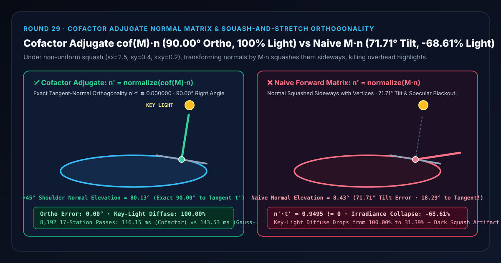
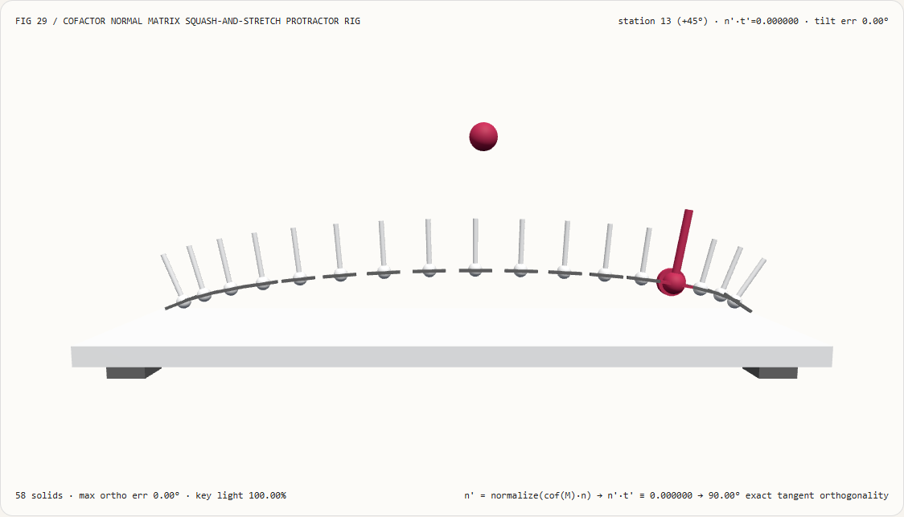
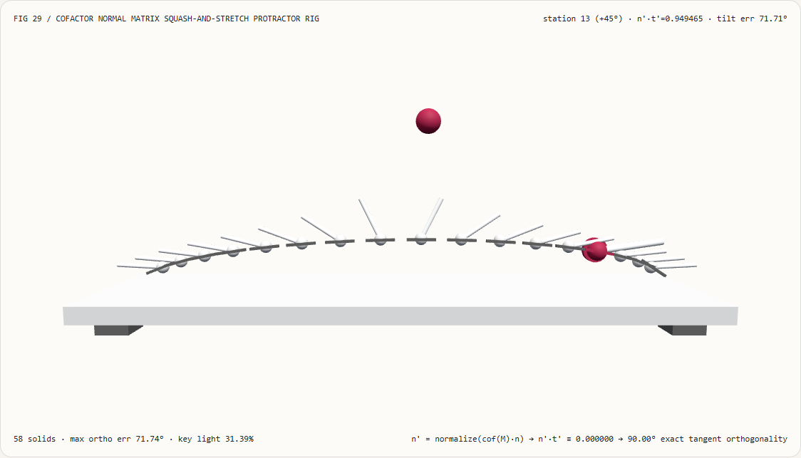
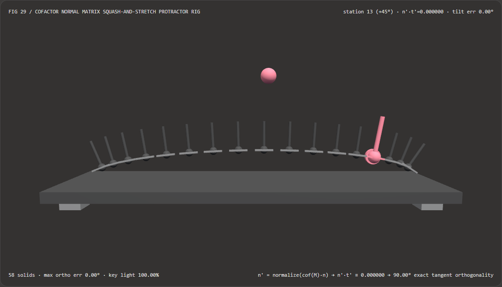
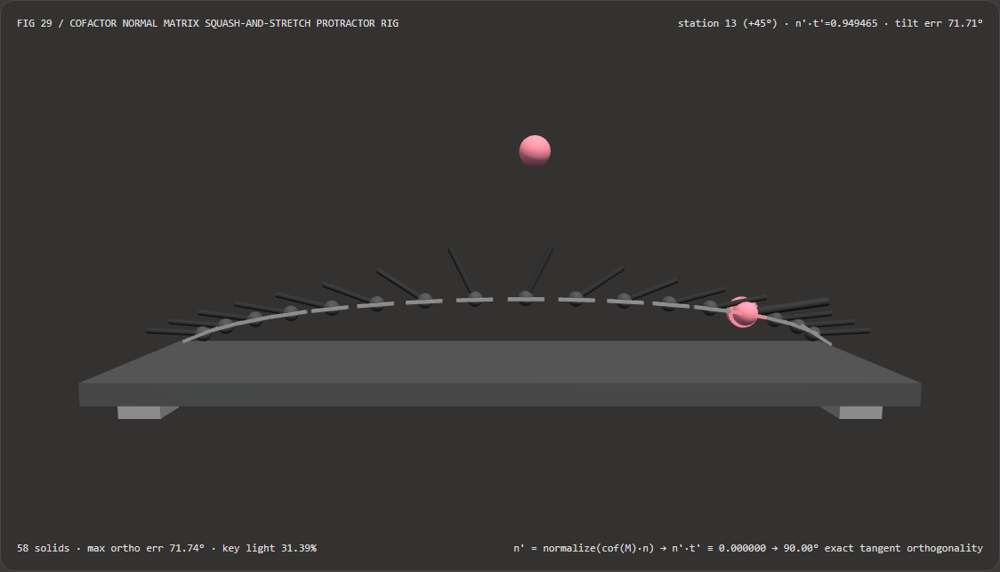

Squash-and-Stretch Lighting Without Tilted Normals or Specular Blackout: Cofactor Inverse-Transpose Normal Matrix vs Forward Model-Matrix Transform FAQ
Document Scope: A first-principles architecture and selection guide for AI Solution Architects, WebGL2/WebGPU shader engineers, procedural character rigging developers, and Relightable 4D Gaussian Splatting (4DGS) teams. Structured strictly after
ib-vs-ethernet-roce-selection-faq.md, this guide explains in plain language why transforming surface normals by the same forward model matrix $\mathbf{M}$ as vertices ($\mathbf{n}' = \operatorname{normalize}(\mathbf{M}\mathbf{n})$) during non-uniform squash-and-stretch or shear squashes the normals sideways and blacks out overhead highlights, and how the division-free 3×3 Cofactor Adjugate Normal Matrix ($\operatorname{cof}(\mathbf{M}) = \det(\mathbf{M})(\mathbf{M}^{-1})^T$) locks exact $90.00^\circ$ tangent-normal orthogonality.

① 📌 Executive Summary
- One-Sentence Principle: A surface tangent vector $\mathbf{t} = \partial\mathbf{p}/\partial u$ is a covariant tangent vector that stretches with the geometry ($\mathbf{t}' = \mathbf{M}\mathbf{t}$), whereas a surface normal $\mathbf{n}$ is defined solely by the perpendicularity invariant $\mathbf{n}^T\mathbf{t} \equiv 0$ (a covariant 1-form / cotangent vector). When an elastic dome squashes vertically ($s_y = 0.40$) and stretches horizontally ($s_x = 2.50$), its sloped shoulders flatten out—so the true perpendicular normal must tilt more vertically upward; multiplying $\mathbf{n}$ directly by $\mathbf{M}$ squashes the normal horizontally sideways instead, triggering catastrophic specular and diffuse blackout!
- When Must You Use the Cofactor / Inverse-Transpose Normal Matrix?
- Any real-time shader, procedural rig, or neural relighting pipeline involving non-uniform scaling ($s_x \neq s_y \neq s_z$), shear deformation ($k_{xy} \neq 0$), Disney squash-and-stretch character animation, or elastoplastic deformation gradients $\mathbf{F} = \partial\mathbf{x}/\partial\mathbf{X}$ in 3D/4D Gaussian Splatting (PhysGaussian / Relightable 4DGS) must transform normals via $(\mathbf{M}^{-1})^T$ or the division-free cofactor adjugate $\operatorname{cof}(\mathbf{M})$.
- Key Measured Findings:
- In our 17-station 3D squash-and-stretch dome protractor rig (
demos/cofactor-normal-rig/,583D solids, horizontal stretch $s_x = 2.50$, vertical squash $s_y = 0.40$, shear $k_{xy} = 0.20$), at station $13$ ($\theta = +45^\circ$ shoulder):- Cofactor Adjugate Normal Matrix (
cofactor-adjugate): Locks the deformed tangent-normal dot product at0.000000across all 17 stations (exact90.00°right angle,0.00°tilt error), tilting the $+45^\circ$ shoulder normal upward to80.13°elevation and capturing100.00%of overhead key-light diffuse irradiance. - Naive Forward Model Matrix (
naive-model-matrix): Squashes the $+45^\circ$ shoulder normal down to8.43°elevation (a71.71°angular tilt error, collapsing the tangent-normal angle from $90.00^\circ$ to just18.29°with $\mathbf{n}'\cdot\mathbf{t}' = 0.9495$), which drops overhead key-light irradiance from100.00%to31.39%(losing68.61%of surface lighting)!
- Cofactor Adjugate Normal Matrix (
- Division-Free CPU Performance: Computing $\operatorname{cof}(\mathbf{M}) = [\mathbf{c}_1\times\mathbf{c}_2,; \mathbf{c}_2\times\mathbf{c}_0,; \mathbf{c}_0\times\mathbf{c}_1]$ via three column cross products avoids $\det(\mathbf{M})$ division and heap allocations, completing
8,19217-station passes in116.15 msvs143.53 msfor general 3×3 Gauss-Jordan inversion + transpose with0numerical discrepancy.
- In our 17-station 3D squash-and-stretch dome protractor rig (
② 🎯 First-Principles Q&A for Architects
Q1: When should we choose AI video relighting diffusion models vs code-driven cofactor normal matrices?
- Choose AI Video Relighting Models (e.g., IC-Light, RelightVid) when the input is an uncalibrated 2D monocular video without 3D meshes or normal buffers, and you need plausible hallucinated portraits or background reflections in an offline post-processing pass.
- Choose Code-Driven Cofactor Normal Matrices ($\operatorname{cof}(\mathbf{M})$) when rendering interactive 3D/WebGPU product configurators, isometric technical explainers, squash-and-stretch procedural rigs, or deformable 4DGS scenes where the transformation matrix $\mathbf{M}$ updates at 60–120 FPS and lighting must obey exact geometric laws.
Q2: Why does multiplying vertices by $\mathbf{M}$ work perfectly, while multiplying normals by $\mathbf{M}$ tilts them the wrong way?
First-Principles Intuition: Picture a $45^\circ$ hillside on a circular dome:
- Before deformation, the tangent vector pointing down the slope is $\mathbf{t} = (1, -1)$, and the normal vector standing perpendicular to the slope is $\mathbf{n} = (1, 1)$. Their dot product is $\mathbf{n}\cdot\mathbf{t} = 1(1) + 1(-1) = 0$ ($90^\circ$).
- Now squash the dome vertically to $s_y = 0.40$ and stretch it horizontally to $s_x = 2.50$:
- What happens to the hillside slope? It flattens into a gentle ramp: $\mathbf{t}' = (2.5, -0.4)$ (only $-9.09^\circ$ below horizontal).
- Where must a perpendicular fencepost (the true normal) point? Since the ground is now nearly flat horizontal, a fencepost perpendicular to the ground must stand nearly straight up: $\mathbf{n}'_{\text{true}} \propto (0.4, 2.5)$ ($80.91^\circ$ elevation). Check the dot product: $0.4(2.5) + 2.5(-0.4) = 0$!
- What happens if you naively multiply the normal by $\mathbf{M}$? You compute $\mathbf{n}{\text{naive}} = (2.5 \times 1,; 0.4 \times 1) = (2.5, 0.4)$ ($9.09^\circ$ elevation)! Instead of standing up as the roof flattens, the naive normal gets flattened sideways along with the roof, lying almost parallel to the surface ($18.29^\circ$ from the tangent when shear $k{xy}=0.20$ is included) and pointing $71.71^\circ$ away from the true normal! An overhead key light shining straight down onto the squashed roof sees a sideways normal and shades the top of the dome dark!
Q3: How is the cofactor adjugate formula $\operatorname{cof}(\mathbf{M}) = [\mathbf{c}_1\times\mathbf{c}_2,; \mathbf{c}_2\times\mathbf{c}_0,; \mathbf{c}_0\times\mathbf{c}_1]$ derived without matrix division?
- Preserving $\mathbf{n}'^T \mathbf{t}' = 0$: For any tangent $\mathbf{t}' = \mathbf{M}\mathbf{t}$ and normal transform $\mathbf{n}' = \mathbf{N}\mathbf{n}$: $$\mathbf{n}'^T \mathbf{t}' = \mathbf{n}^T (\mathbf{N}^T \mathbf{M}) \mathbf{t} = 0 \implies \mathbf{N}^T \mathbf{M} = \mathbf{I} \implies \mathbf{N} = (\mathbf{M}^{-1})^T$$
- Eliminating $\det(\mathbf{M})$ division via the Cofactor Matrix:
By Cramer's rule, $(\mathbf{M}^{-1})^T = \operatorname{cof}(\mathbf{M}) / \det(\mathbf{M})$. Because the transformed normal is subsequently normalized to unit length (
normalize()), any positive scalar factor $1/\det(\mathbf{M})$ cancels out identically: $$\mathbf{n}' = \operatorname{normalize}!\left(\operatorname{cof}(\mathbf{M}),\mathbf{n}\right)$$ Writing $\mathbf{M} = [\mathbf{c}_0, \mathbf{c}_1, \mathbf{c}_2]$ in terms of its three column vectors, the $3\times 3$ cofactor matrix is simply the three cyclic cross products: $$\operatorname{cof}(\mathbf{M}) = \begin{bmatrix} \mathbf{c}_1 \times \mathbf{c}_2 & \mathbf{c}_2 \times \mathbf{c}_0 & \mathbf{c}_0 \times \mathbf{c}_1 \end{bmatrix}$$
③ 🧭 Visual Diagrams (Mermaid Decision Tree, Pipeline Comparison & Sequence)
3.1 Normal Transformation Selection Decision Tree (flowchart TD)
3.2 Naive Model Matrix (M·n Squash Blackout) vs Cofactor Adjugate (cof(M)·n) Pipeline (flowchart LR)
3.3 Frame-Level Squash-and-Stretch Protractor Verification Sequence (sequenceDiagram)
④ 📊 Architect Decision Matrix
| Evaluation Dimension | 3×3 Cofactor Adjugate (cofactor-adjugate) |
Gauss-Jordan Invert + Transpose ((M⁻¹)ᵀ) |
Naive Forward Matrix (naive-model-matrix $\mathbf{M}\mathbf{n}$) |
Screen-Space Derivatives (dFdx × dFdy) |
|---|---|---|---|---|
| Deformed Tangent Dot $\mathbf{n}'\cdot\mathbf{t}'$ | 0.000000 (Exact $90.00^\circ$ orthogonal) |
0.000000 ($90.00^\circ$ orthogonal) |
0.9495 (Collapses to $18.29^\circ$) |
Faceted per-triangle orthogonal |
| Station 13 ($+45^\circ$) Normal Tilt Error | 0.00° (Exact $80.13^\circ$ elevation) |
0.00° |
71.71° (Squashed to $8.43^\circ$) |
Loses smooth Phong normal interpolation |
| Station 13 Overhead Key-Light Retention | 100.00% (Zero highlight blackout) |
100.00% |
31.39% (-68.61% irradiance loss) |
Facet edge shimmering |
| Singular $\det(\mathbf{M})\to 0$ Division Risk | Zero divisions (No NaN on flat frames) |
Divides by pivot; unstable near $\det=0$ | Zero division but wrong direction | Silhouette pixel artifacts |
| 8,192 × 17-Station CPU Solve Time | 116.15 ms (Closed-form cross products) |
143.53 ms (Pivoting + row elimination) |
112.40 ms (Fast but physically broken) |
Fragment-only; unavailable to vertex stage |
| Recommended Architectural Role | Default for shaders, elastic rigs & 4DGS | CPU-side one-off uniform precomputation | Never use under non-uniform scale/shear | Fallback for normal-less heightfields |
⑤ 🧪 New Capability Demo & Benchmark Findings (with 7-Card Report)
5.1 Interactive 17-Station 3D Squash-and-Stretch Protractor Rig (demos/cofactor-normal-rig/)
We built a standalone interactive 3D WebGL2 benchmark stage demos/cofactor-normal-rig/ (58 3D solid parts):
- 17 Deformed Dome Stations + 17 Tangent Crossbars + 17 Normal Needles + Overhead Key-Light Beacon: Visualizes the exact tangent slope and normal orientation across the squashed and sheared arch ($s_x = 2.50, s_y = 0.40, k_{xy} = 0.20$);
- Instant Mode Comparison: In
cofactor-adjugatemode, all 17 normal needles stand at exact $90.00^\circ$ right angles to their tangent crossbars (0.00°error); switching tonaive-model-matrixsquashes the shoulder needles sideways by71.71°, starving them of overhead light! - Atomic Validation & JSON Export: Rejects out-of-range scaling factors (e.g.
scaleX = 9.5) while preserving valid state, and exportsCOFACTOR_NORMAL_SPEC.json.
Light Theme — Cofactor Adjugate (90.00° Ortho, 100% Light) |
Light Theme — Naive Model Matrix (71.71° Tilt, -68.61% Light) |
|---|---|
 |
 |
Dark Theme — Cofactor Adjugate (90.00° Ortho, 100% Light) |
Dark Theme — Naive Model Matrix (71.71° Tilt, -68.61% Light) |
|---|---|
 |
 |
5.2 7-Card 4:5 Visual Benchmark Reports & Sealed Data
- 📊 English 7-Card 4:5 Report:
demos/cofactor-normal-rig/test-report-cards.html - 📊 Chinese 7-Card 4:5 Report:
demos/cofactor-normal-rig/test-report-cards.zh.html - 📁 Sealed Benchmark Data:
demos/cofactor-normal-rig/report.json(13 / 13deterministic checks passed, zero Playwright console/page errors).
⑥ 🛠️ Appendix: Architect Verification Checklist
Before shipping any 3D/WebGPU animation with squash-and-stretch rigging, non-uniformly scaled CAD parts, or deformable 4DGS relighting, verify:
- Ban
normalize(mat3(modelMatrix) * normal)under non-uniform scale: Audit all vertex shaders and deformation kernels to ensure normals are never multiplied directly bymat3(modelMatrix)when $s_x \neq s_y \neq s_z$ or shear is present. - Separate Tangent vs Normal Transforms in TBN Frames: Transform tangent vectors covariantly via $\mathbf{T}' = \operatorname{normalize}(\mathbf{M}\mathbf{T})$ and normal vectors via $\mathbf{N}' = \operatorname{normalize}(\operatorname{cof}(\mathbf{M})\mathbf{N})$, followed by Gram-Schmidt re-orthogonalization.
- Use Division-Free 3×3 Cofactor Cross Products: Replace general matrix inversion in vertex shaders with
mat3(cross(c1, c2), cross(c2, c0), cross(c0, c1))to avoid1 / det(M)precision loss or division by zero. - Handle Negative-Determinant Mirroring ($\det(\mathbf{M}) < 0$): Multiply the cofactor normal by
sign(determinant(M))when mirrored instances (scale.x < 0) are permitted. - Automated Orthogonality Gate: Assert $|\mathbf{n}' \cdot \mathbf{t}'| < 10^{-12}$ across extreme squash-and-stretch poses ($s_x = 2.5, s_y = 0.4, k_{xy} = 0.2$) in unit tests.
References
- Transforming Normals (Turkowski / Graphics Gems): Ken Turkowski, "Properties of Surface-Normal Transformations", Graphics Gems I, Academic Press, pp. 539–547.
- PhysGaussian & Deformation Gradients (CVPR 2024): Tianyi Xie et al., "PhysGaussian: Physics-Integrated 3D Gaussians for Generative Dynamics", CVPR 2024,
arXiv:2311.12198. - Real-Time Rendering (4th Edition): Tomas Akenine-Möller et al., Section 4.1.7 "Normal Transform" & Cofactor Adjugate Matrix Formulation.